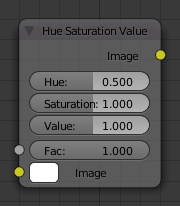

Hue Saturation Value Node¶

Hue Saturation Node.
This node applies a color transformation in the HSV color space. Called “Hue Saturation Value” in shader and texture context.
Inputs¶
- Factor
- Controls the amount of influence the node exerts on the output image.
- Image
- Standard image input.
Properties¶
The transformations are relative shifts. In the shader and texture context the following properties are available as input sockets.
- Hue
- Specifies how the hue rotation of the image. 360° are mapped to (0 to 1). The hue shift of 0 (-180°) and 1 (+180°) have the same result.
- Saturation
- A saturation of 0 removes hues from the image, resulting in a grayscale image. A shift greater 1.0 increases saturation.
- Value
- Value is the overall brightness of the image. De/Increasing values shift an image darker/lighter.
Outputs¶
- Image
- Standard image output.
Hue/Saturation Tips¶
Some things to keep in mind that might help you use this node better:
- Hues are vice versa
- A blue image, with a Hue setting at either end of the spectrum (0 or 1), is output as yellow (recall that white, minus blue, equals yellow). A yellow image, with a Hue setting at 0 or 1, is blue.
- Hue and Saturation work together.
- So, a Hue of 0.5 keeps the blues the same shade of blue, but Saturation can deepen or lighten the intensity of that color.
- Gray & White are neutral hues
- A gray image, where the RGB values are equal, has no hue. Therefore, this node can only affect it with Value. This applies to all shades of gray, from black to white; wherever the values are equal.
- Changing the effect over time
- The Hue and Saturation values can be animated with a Time Node or by animating the property.
注解
Tinge
This HSV node simply shifts hues that are already there. To colorize a gray image, or to add a tint to an image, use a mix node to add in a static color from an RGB input node with your image.
HSV Example¶

A basic example.